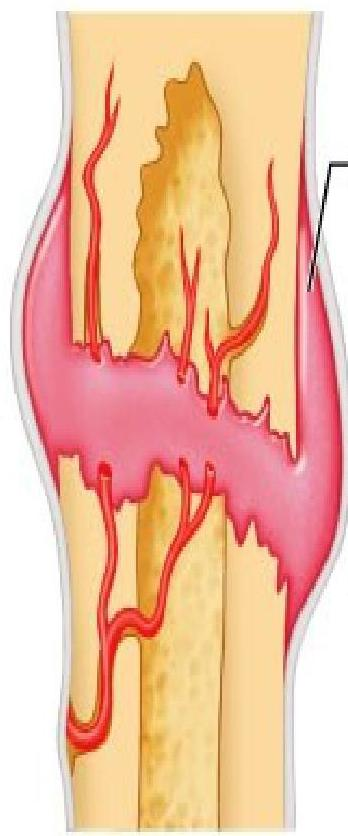
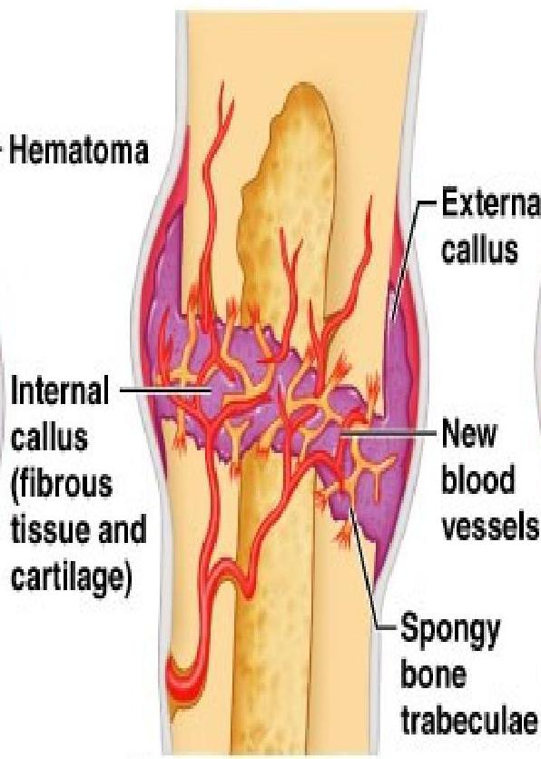
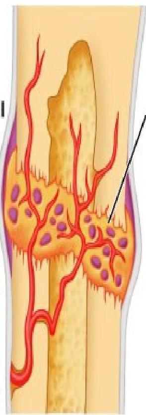
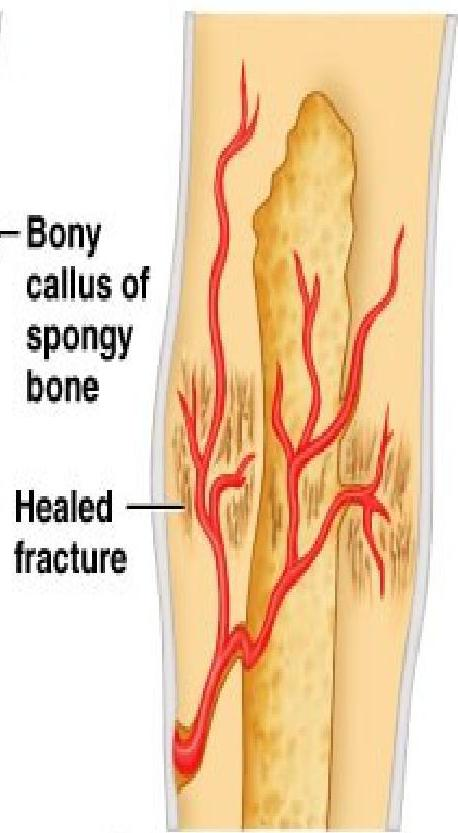
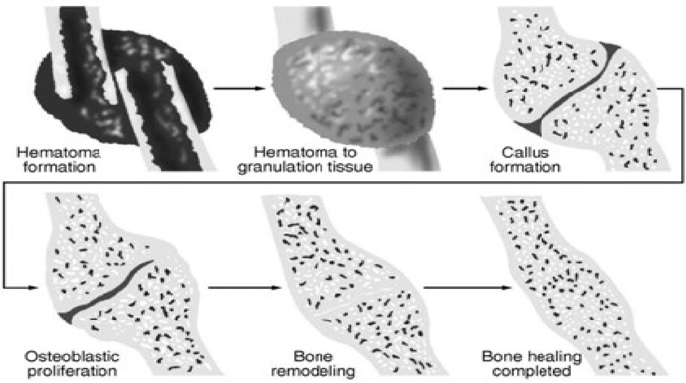

🦴
Topic 03
Fracture Healing Physiology
01
Introduction to Bone Healing
- Fracture healing occurs by the formation of new bone tissue, rather than formation of non-specialized fibrous scar tissue.
- New bone is formed by activation of osteoclasts & osteoblasts.
02
Factors Influencing Healing
Factors enhancing fracture healing
- Adequate nutrition
- Adequate blood supply
- Absence of infection
- Immobilization of fracture fragments
- Exercise: weight bearing for long bones
- Hormones: growth hormone calcitonin, vitamin D
Factors hindering fracture healing
- Presence of infective organisms e.g. streptococci
- Fat embolism in medullary canal
- Excessive bone tissue fragments
- Deficient blood supply
- Continued mobility (lack of proper reduction and immobilization)
- Age - old age due to slowing
- Metabolic bone disease (e.g. Paget's disease)
Important Notes
- Factors influencing fracture healing can be categorized as local and systemic factors (Assignment)
- The process of fracture healing can be supported by various treatment options with immobilization a mainstay;
- Inappropriate treatment may result in a variety of complications.
- Depending on the fracture site, normal healing in adults may take 3-12 weeks and involve five main stages.
03
Fracture Healing Process
Stages Overview
- Haematoma formation.
- Fibrocartilage formation.
- Callus formation.
- Ossification.
- Consolidation and remodeling
Stage 1: Haematoma Formation (Inflammation)
- Occurs within 24hrs;
- Cells move to the site
- Blood clot forms (haematoma); a loose delicate mesh of fibrins forms around the # site.
- New cells (fibroblasts) develop in the area and fresh capillaries are formed around the broken ends of bone. This protectively encloses the damaged bone, acting as a scaffold of the capillary buds & fibroblasts.

Stage 2: Fibrocartilage Formation/Cellular Proliferation
- Takes place at the # site where torn ends of the periosteum, endosteum & bone marrow supply the cells that proliferate & differentiate into fibrocartilage, hyaline cartilage & fibrous connective tissues.

Stage 3: Callus formation (Reparative Phase)
- Occurs 6-10 days after injury,
- Gradual lay down of bone by osteoblasts to join broken ends of bones
- Granulation tissues changes & a provisional callus (a large loosely woven mass of bone & cartilage) forms.

Stage 4: Ossification
- A permanent callus of true, rigid bone forms by the deposition of calcium salts which knit the fractured bone ends together (external to internal).
- During the 3rd to 10th week of healing.
- Callus converts into bone. This firmly binds the fractured ends & completes healing.

Stage 5: Consolidation and Remodeling
- Fracture calcifies in several months.
- The callus is remodeled by osteoblasts and osteoblastic activity.
- Remodeling is governed by the stress, function and strain imposed on it by the muscles & weight bearing.
Bone Healing

Copyright © 2004 Pearson Education, Inc., publishing as Benjamin Cummings.
04
References & Conclusion
ANY QUESTIONS SO FAR?
References/ Further Readings
- David, L., Hamblen, A., Hamish, R. and Simpson, W. (2007.) Adam's Outline of Fractures, 12th Ed. Churchill Livingstone, Elsevier.
- Dandy, D. and Edwards, D. (2009). Essential Orthopaedics and Trauma. 5th Ed. Churchill Livingstone, Edinburgh
- Kenneth, A, et al (2010). Handbook of Fractures. 4th Ed. Wolters Kluwer, Philadelphia
- McRae, S. and Esser, M. (2008). Practical Fracture Management. 5th Ed. Elsevier Churchill Livingstone, Edinburgh
- Sherry, E. and Bokor, D. (1997). Sports Medicine – Problems and Practical Management. Greenwich Medical Media, London
- Louis, S., David, W. and Selvadurai, G. (2010). Apley's System of Orthopaedics and Fractures, 8th Ed.
There is Hope of a bright future...all is not lost;
Let's all cooperate to control Covid-19:
Stay Safe...Stay at home.
Let's Practice the guidelines recommended by WHO, CDC and GOK...
...and...
...above all...
PRAY !!!
Jer. 29:11, 2 Chr.7:12-16, Phil. 4:6-7, Heb. 13:6-7, Joel 2:32, Acts 10:21, Rom. 3:13
THANK YOU
Knowledge Check
Test Your Understanding
Complete this quiz to assess your comprehension of Fracture Healing Physiology.
Loading quiz...